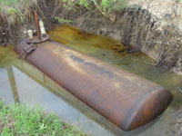
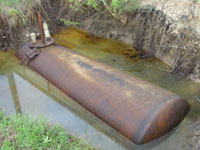
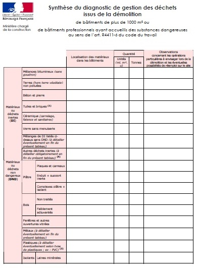
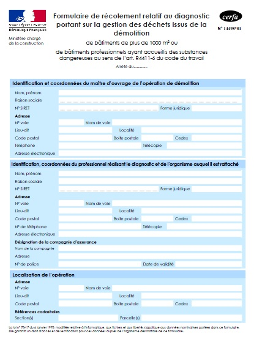

>Diagnostic déchets avant démolition consultez nous à l'onglet contact.
Réalisez votre diagnostic déchets avant démolition par une entreprise impliquée, indépendante et réactive, totalisant plus de 20 années d'expérience dans la collecte, le transport, et le traitement des déchets.
Une obligation légale pour les permis de démolition déposé après le 1 avril 2012: Décret n° 2011-610 du 31 mai 2011 relatif au diagnostic portant sur la gestion des déchets issus de la démolition de catégories de bâtiments
Sont concernées les démolitions des bâtiments suivants:
- Ceux d'une surface hors d'oeuvre brute supérieure à 1 000 m².
- Ceux ayant accueillis une activité agricole, industrielle ou commerciale et ayant été le siège d'une utilisation, d'un stockage, d'une fabrication ou d'une distribution d'une ou plusieurs substances dangereuses classées comme telles en vertu de l'article R.411-6 du code du travail.
L'objectif de cette règlementation:
- Permettre un récolement en fin de chantier entre les déchets prévus, sortis du chantier et entrés en filière de recyclage, revalorisation ou traitement.
- D'offrir une plus grande transparence dans la phase démolition pour toutes les parties.
- Améliorer la gestion dans le choix des filièresde recyclage, revalorisation ou traitement .
Arrêté du 19 décembre 2011 relatif au diagnostic portant sur la gestion des déchets issus de la démolition de catégories de batiments.Une grande évolution dans les moyens :
Démolition du vieux quartier Saint Georges à Toulouse vers 1962 / recyclage sur place des bétons de nos jours.
Une synthèse du diagnostic de gestion des déchets issus de la démolition trés encadrée :

Le formulaire de récolement relatif au diagnostic portant sur la gestion des déchets issus de la démolition :

Formulaire de récolement relatif au diagnostic portant sur la gestion des déchets issus de la démolition.